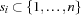
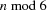
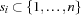
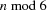
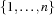
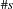
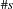

2 The Steiner Problem
Problem Specification
The ternary Steiner problem of order  asks for
asks for  sets  with cardinality 3 such that every two of them share at most one element. The mathematical properties of the problem require that  has to be either 1 or 3 [LR80].
sets  with cardinality 3 such that every two of them share at most one element. The mathematical properties of the problem require that  has to be either 1 or 3 [LR80].
Model
We create a list Ss of set variables and constrain every set to have a cardinality of 3 and to have an upper bound of . Further we require that the cardinality of the intersection of every two distinct sets in Ss must not exceed 1.
Distribution Strategy
Distribution simply takes the sets as they occur in Ss and adds resp. removes elements from them starting from the smallest element.
Solver
The solver is created by a function Steiner that takes the order of the Steiner problem as argument and checks if it is a valid order. In case it is valid it returns the actual solver with the list of solution sets as formal argument.
First, the list Ss is created and its elements' upper bounds and cardinalities are appropriately constrained. The nested loops built with ForAllTail and ForAll impose the constraint that every two sets share at most one element by stating that the cardinality of the intersection of two sets is in  . Distribution is straightforward and uses the provided library abstraction
. Distribution is straightforward and uses the provided library abstraction FS.distribute for naive distribution..
declare
fun {Steiner N}
case
N mod 6 == 1 orelse N mod 6 == 3
then
proc {$ Ss}
{FS.var.list.upperBound (N*(N-1)) div 6 [1#N] Ss}
{ForAll Ss proc {$ S} {FS.card S 3} end}
{ForAllTail Ss
proc {$ S1|Sr}
{ForAll Sr
proc {$ S2} S3 in
S3 = {FS.intersect S1 S2}
{FS.cardRange 0 1 S3}
end}
end}
{FS.distribute naive Ss}
end
else proc {$ _} fail end
end
end
Solving the Steiner problem of order 9 by invoking the Oz Explorer
{ExploreOne {Steiner 9}}yields as solution
[{1#3}#3 {1 4#5}#3 {1 6#7}#3 {1 8#9}#3 {2 4 6}#3 {2 5 8}#3
{2 7 9}#3 {3#4 9}#3 {3 5 7}#3 {3 6 8}#3 {4 7#8}#3 {5#6 9}#3].The search tree has depth 50, 4545 choice nodes, and 4521 failure nodes.

Improving the Model
A promising way to improve the efficiency of a constraint model (where the corresponding problem does not have a unique solution) is to break symmetries and thus to improve constraint propagation. Breaking symmetries can be achieved by imposing an order, in our case, an order on the set variables in Ss. We can simply interpret every set as a number with three digits to the base  . A set with three elements
. A set with three elements  can be mapped to an integer by
can be mapped to an integer by  .
.
Extending the Solver
The finite set library provides FS.int.match to match the elements of a set  with a fixed number of elements to a vector of size  of finite domain variables. This library constraint in conjunction with
with a fixed number of elements to a vector of size  of finite domain variables. This library constraint in conjunction with Map is used to convert the list of sets Ss to a list of finite domain lists with 3 finite domains per list. Finally the order between adjacent sets is imposed by
N1N1*X1 + N1*X2 + X3 <: N1N1*Y1+ N1*Y2 + Y3 employing a ForAllTail loop.
local
N1 = N+1 N1N1 = N1*N1
in
{ForAllTail {Map Ss fun {$ S}
{FD.list 3 1#N} = {FS.int.match S}
end}
proc {$ T}
case T of [X1 X2 X3]|[Y1 Y2 Y3]|_ then
N1N1*X1 + N1*X2 + X3 <: N1N1*Y1 + N1*Y2 + Y3
else skip end
end}
end
This code is to be inserted right before the distribution. Solving the Steiner problem of order 9 results in the following search tree.

We see that the number of choice nodes decreases from 4545 to 565 and the number of failure nodes decreases from 4521 to 54. This reduction of the search space gives us a speed-up of about 7 and reduces the memory consumption by about 5.5.